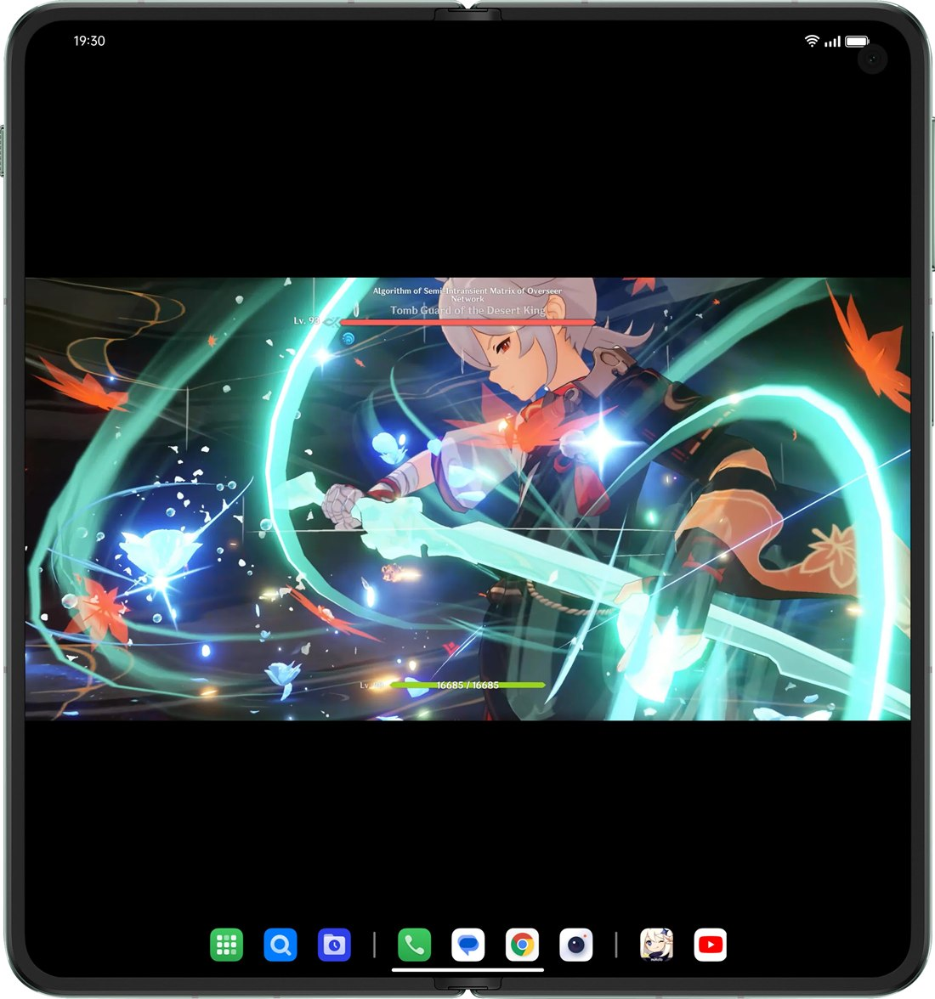
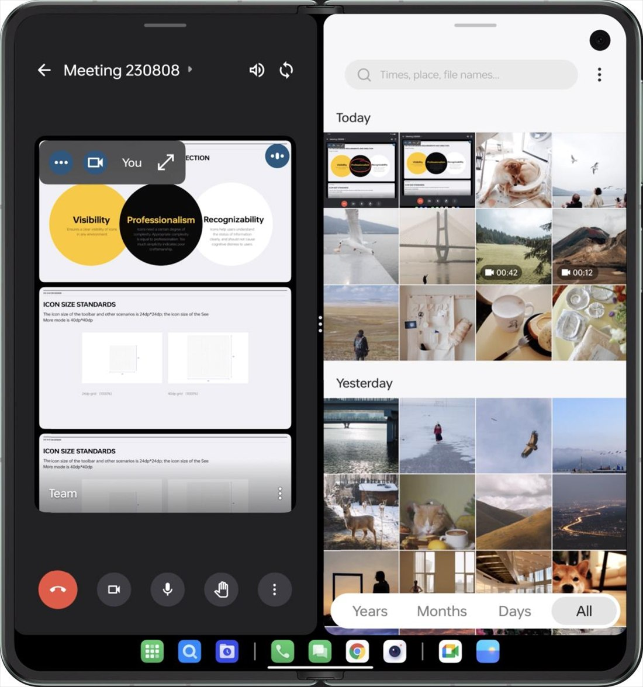
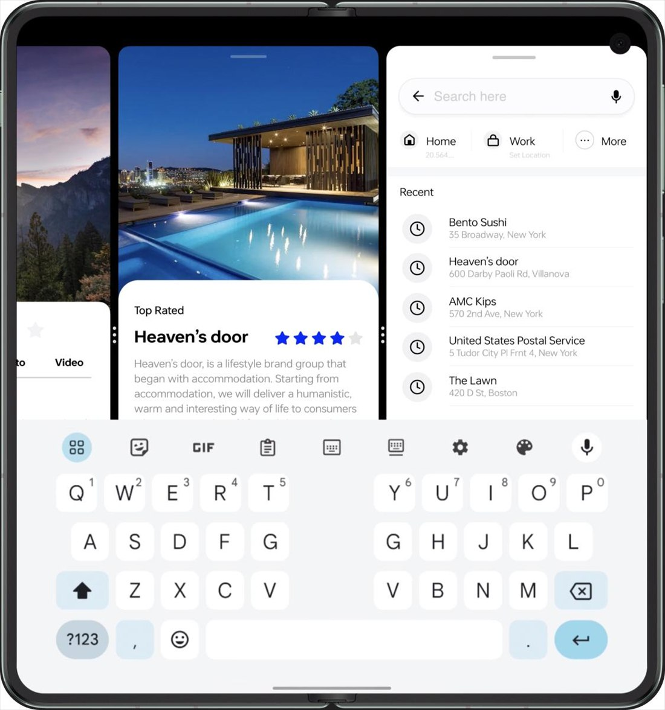
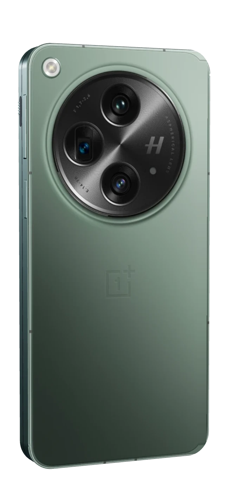
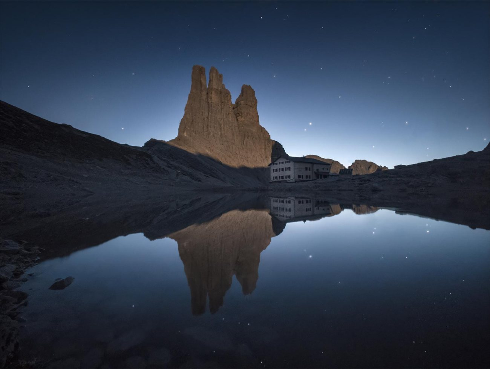
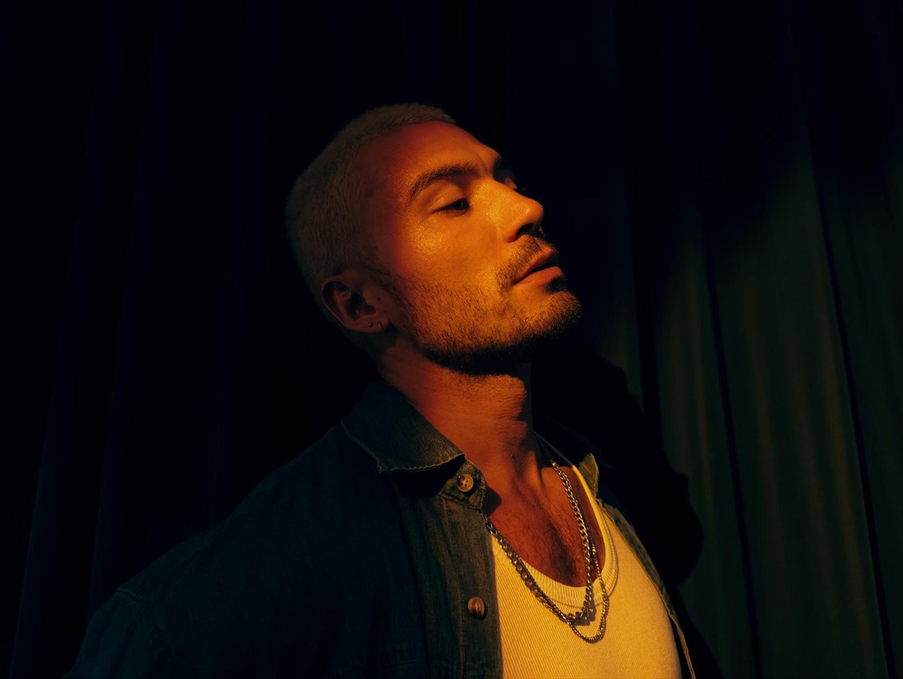
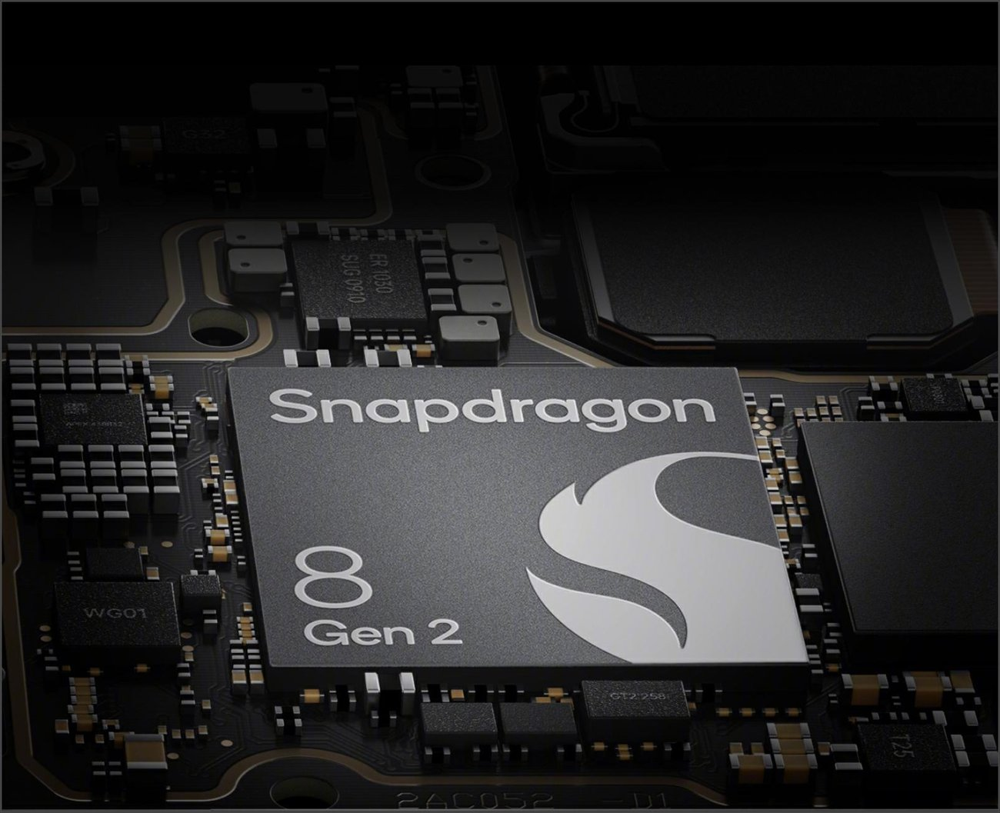
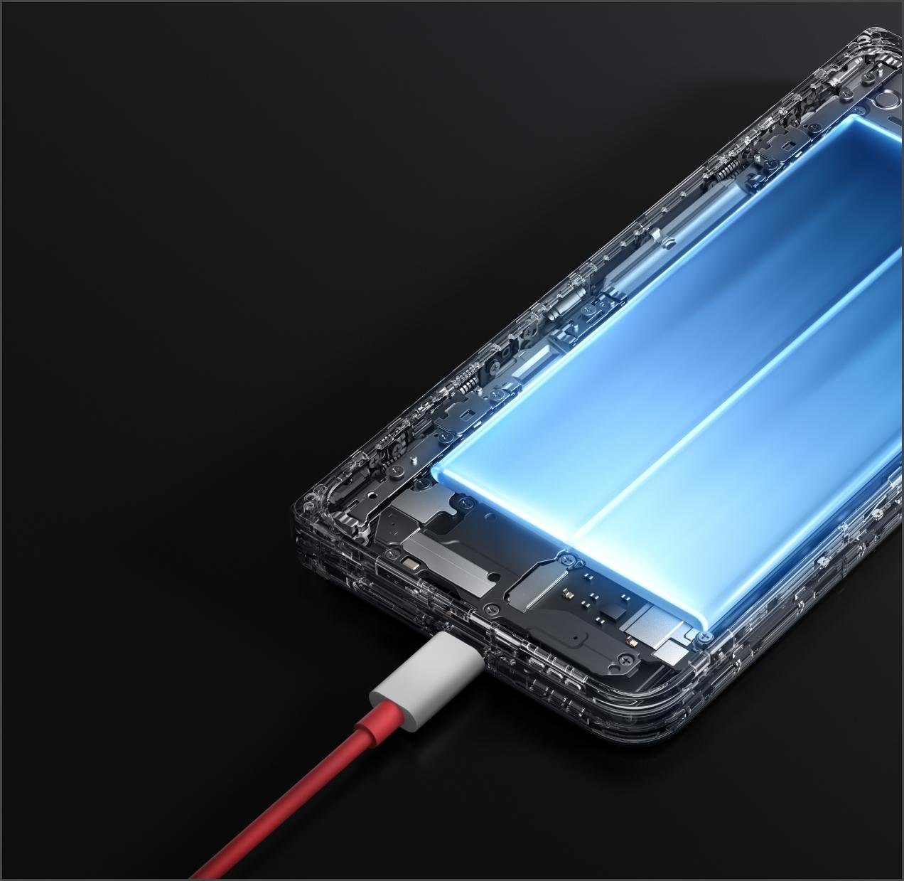

Раскрытие
Был телефон — стал планшет
Половинки расходятся и ложатся в один плоский лист толщиной 5,8 мм. Складка посередине почти не видна.
- 5,8мм раскрытый
- 11,7мм сложенный
- 239граммов



Экран внутри
Планшет в кармане
- 7,82 дюймаЭкран 2K, 120 Гц и яркость до 2800 нит. Игры и фильмы — на весь разворот.
- Два окнаРежим Open Canvas ставит приложения рядом: слева звонок, справа фотографии.
- Три окнаТретье приложение ждёт сбоку: коснись его, и оно выедет на место.

Снаружи
Сложил — снова телефон
- Emerald DuskМатовое зелёное стекло и круглый блок камер Hasselblad.
- 11,7 ммТолщина в сложенном виде. Половинки смыкаются плотно, без щели.
- 6,31 дюймаЭкран на крышке таких же пропорций, как у обычного телефона: почти всё можно делать, не раскрывая.
Снято на OnePlus Open
Раскрой кадр


Начинка
По батарее в каждой половинке


В цифрах